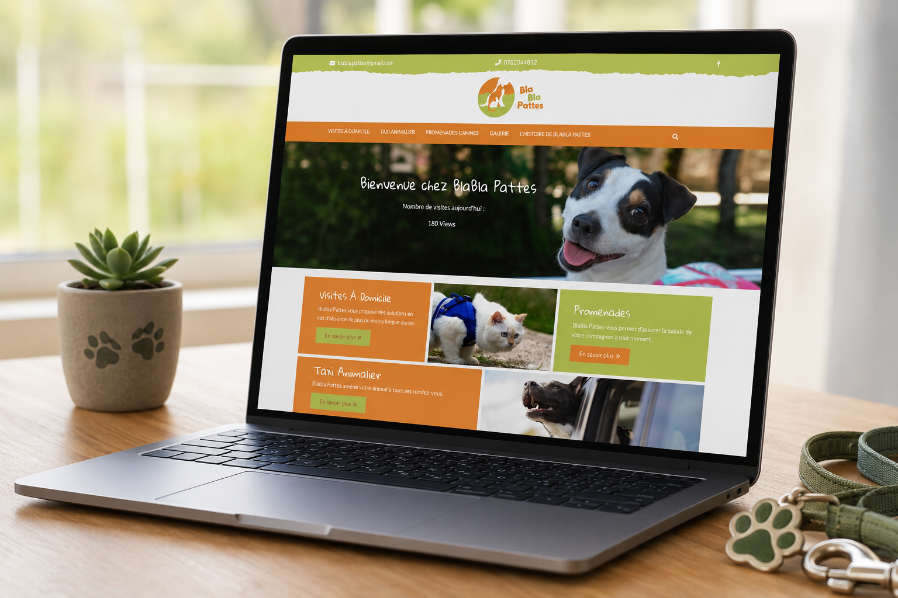
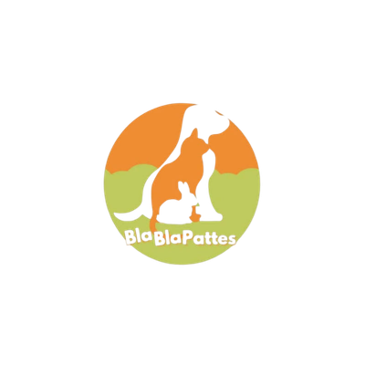
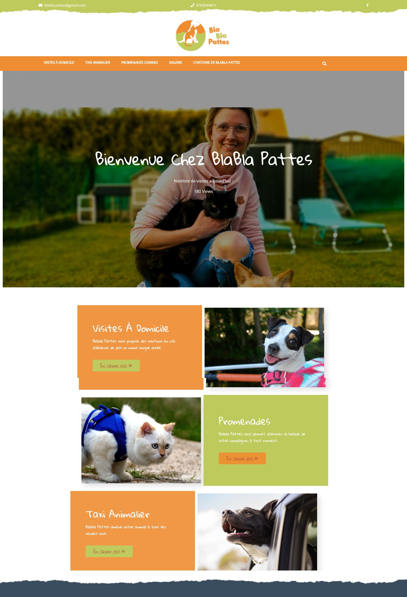
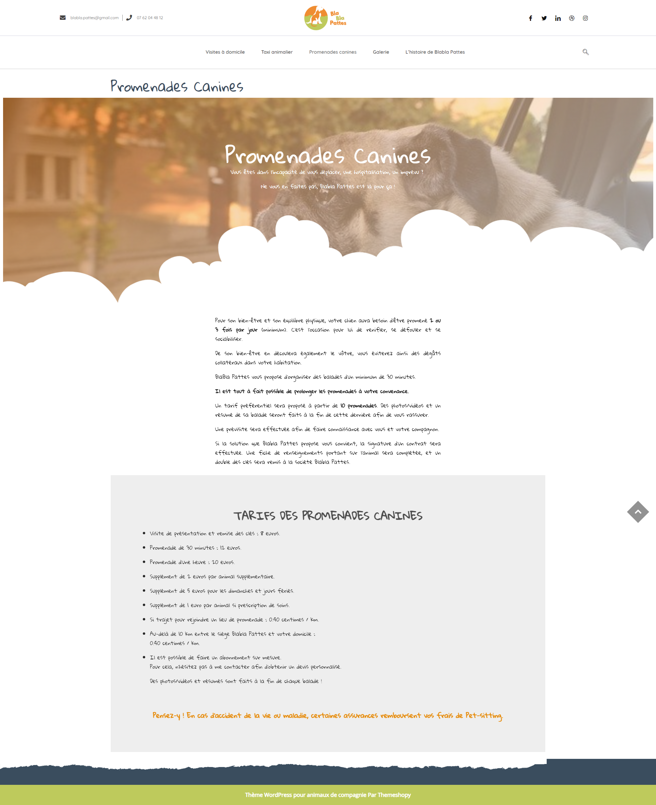

Site Web · Logo · Identité visuelle
Création de zéro du logo et du site vitrine de BlaBlaPattes, entreprise de services aux animaux (visites à domicile, taxi animalier, promenades canines) lancée par une ancienne collègue. Identité visuelle complète et architecture du site.

Site refondu · MacBook Pro · Mise en situation

Un médaillon rond illustré réunissant chien, chat et lapin en silhouette blanche — les trois familles d'animaux accompagnés par BlaBlaPattes — sur un dégradé orange & vert nature, avec une typographie manuscrite chaleureuse.


Confier son animal à quelqu'un demande de la confiance : le logo devait immédiatement rassurer. Le choix s'est porté sur un médaillon rond illustré réunissant un chien, un chat et un lapin en silhouette blanche — pour montrer d'un coup d'œil que BlaBlaPattes s'occupe de toutes les familles d'animaux, pas seulement des chiens.
Le site a ensuite été structuré autour des trois offres de la jeune entreprise — visites à domicile, taxi animalier, promenades canines — chacune avec sa propre page détaillant le déroulé du service et une grille de tarifs claire, pour que le visiteur trouve rapidement l'information et prenne contact en confiance.